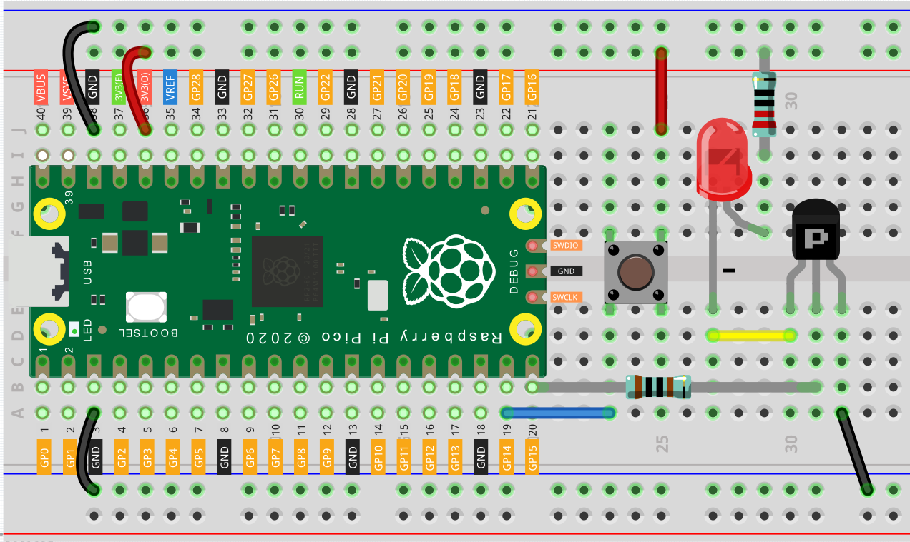

Two Kinds of Transistors¶
三极管是一种通过电流控制电流的半导体器件。它的功能是将微弱的信号放大为较大的幅度信号，也可作为非接触式开关使用。是电子电路的核心元件。
这听起来有点复杂。用简单的话说，某些元器件的使用功率较大（如Buzzer），如果直接由GPIO引脚的电信号供能，则有可能功率不足，或者损坏元器件。 那么，晶体管在这里便起到了一个“大坝”的作用。三极管接收来自GPIO引脚的微弱电信号，来控制大电流（从VCC到GND）的导通与断开。 这样，电子元器件既由GPIO引脚控制，又由外部提供power，从而能够好好工作。
三极管有两种结构形式：PNP和NPN，它们的核心是PN结。由于两者的PN结的组合方式不同，其工作原理相同，但电源极性相反。
本套件配了S8050和S8550两种三极管，前者是NPN，后者是PNP。它们看起来很相似，我们需要仔细检查才能看清它们的label。

两种三极管的工作原理相同，甚至可以使用同一套代码，但在使用时的电路搭建方式却有些不同。
让我们借助LED和button来搞懂如何使用三极管吧！
Wiring¶
将有label的一面朝向我们，引脚朝下，从左到右的引脚分别是emitter(e), base(b), and collector(c)。

Note
The base is the gate controller device for the larger electrical supply.
The collector is the larger electrical supply.
The emitter is the outlet for that supply.
- 连接NPN(S8050)三极管的方式

将 Pico 的 3V3 和 GND 连接至面包板的电源总线。
让LED的阳极 lead 经由 220Ω 电阻器连接至正极电源总线。
将LED的阴极 lead 连接至三极管的 collector lead。
将三极管的 base lead 经由 1kΩ 电阻器连接至 GP15 引脚。
将三极管的 emitter lead 连接负极电源总线。
将按键的两侧分别连接至 GP14 引脚和正极电源总线。
Note
220欧姆的电阻器色环颜色为红红黑黑棕。 1kΩ电阻器的色环颜色为棕黑黑棕棕。
- 连接PNP(S8550)三极管的方式
- 
将 Pico 的 3V3 和 GND 连接至面包板的电源总线。
让LED的阳极 lead 经由 220Ω 电阻器连接至正极电源总线。
将LED的阴极 lead 连接至三极管的 emitter lead。
将三极管的 base lead 经由 1kΩ 电阻器连接至 GP15 引脚。
将三极管的 collector lead 连接负极电源总线。
将按键的两侧分别连接至 GP14 引脚和正极电源总线。
Code¶
两种三极管可以用同一套代码来控制。当我们按下按键时，Pico将为三极管发出高电平信号；松开时则会发送低电平信号。 我们能看到两个电路发生了截然相反的现象。 使用NPN三极管的电路会在按下按键时亮灯，这意味着它是接收高电平导通电路的； 而使用PNP三极管的电路会在松开时亮灯，这意味它是接收低电平导通电路。
import machine
button = machine.Pin(14, machine.Pin.IN)
signal = machine.Pin(15, machine.Pin.OUT)
while True:
if button.value() == 1:
signal.value(1)
elif button.value() == 0:
signal.value(0)